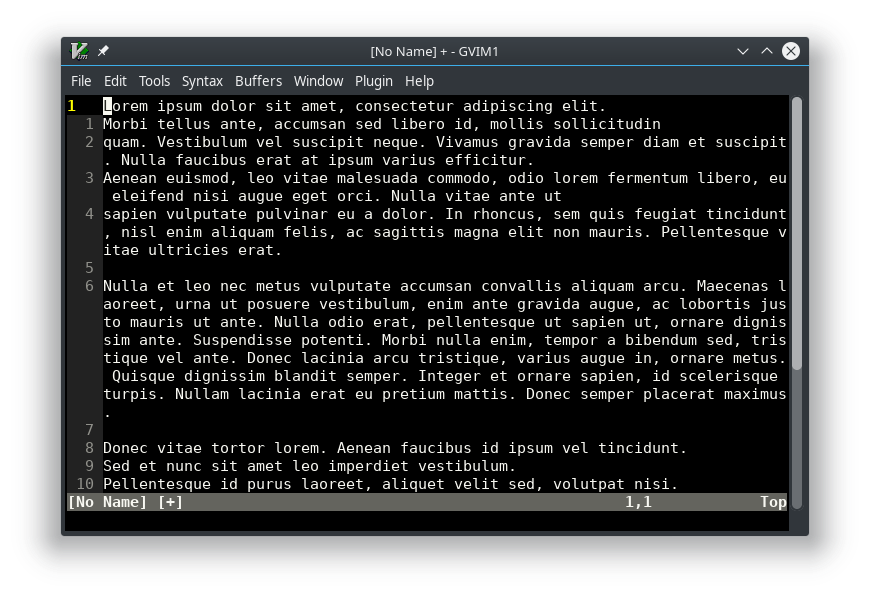
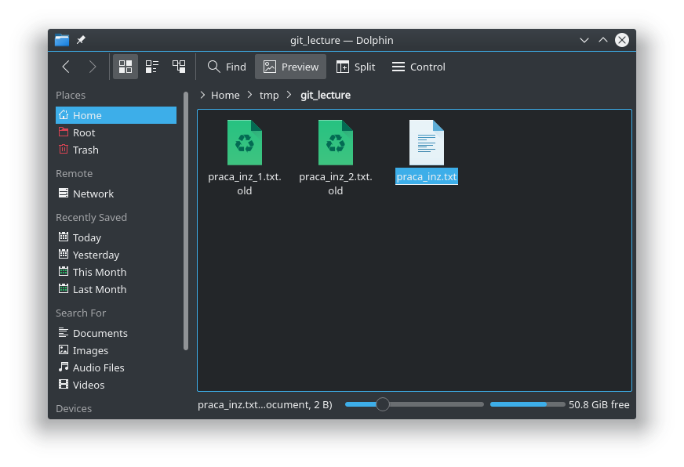
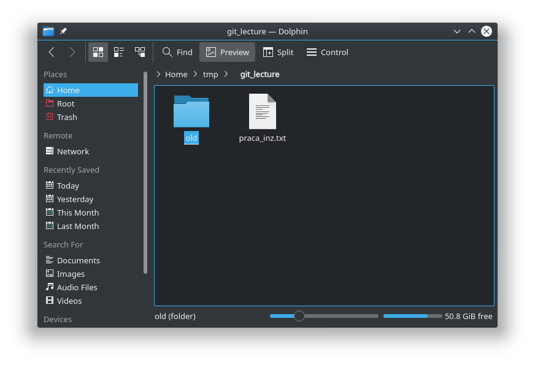
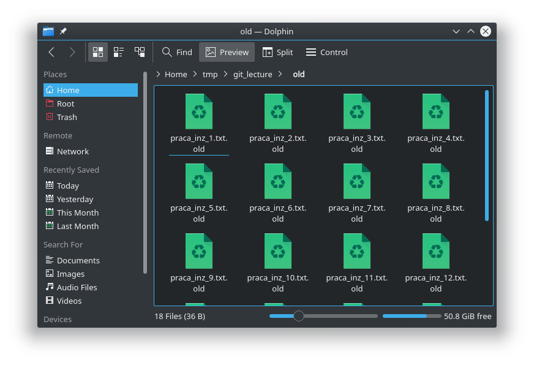
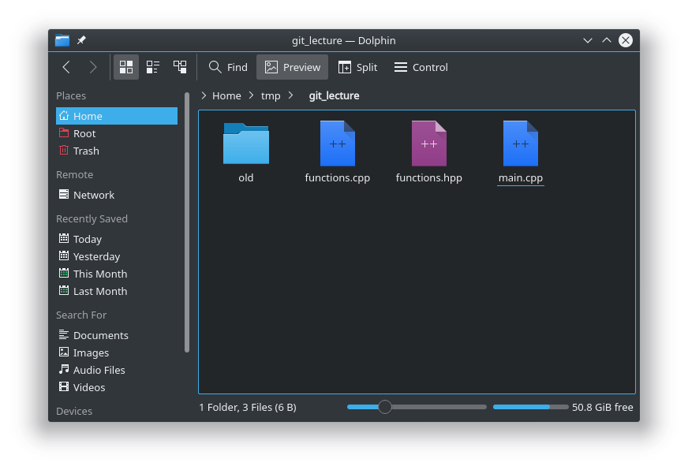
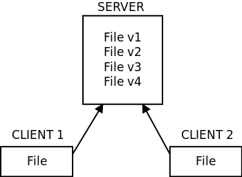
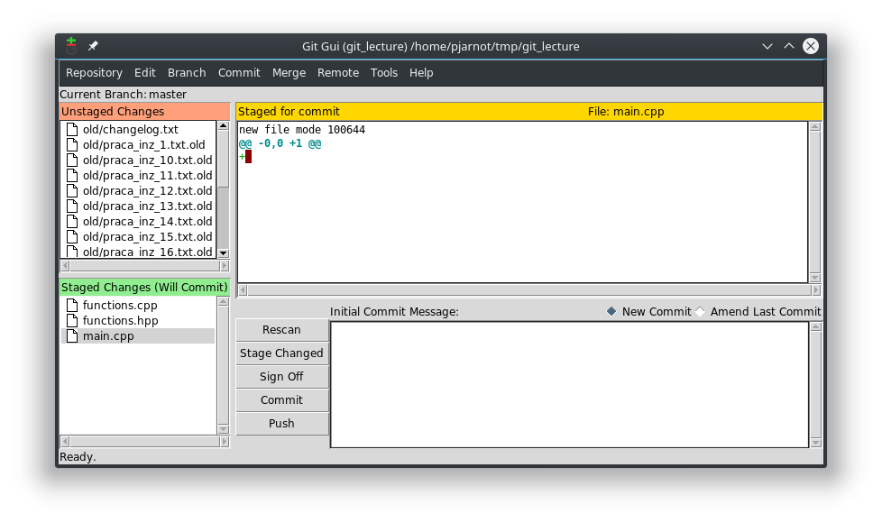

A co jeśli mamy więcej plików?
Wprowadzono lokalne systemy kontroli wersji.
A co jeśli chcemy pracować na tych plikach w grupie?
Zcentralizowane systemy kontroli wersji
Tutaj się zatrzymamy, bo tak wygląda git
Z uwagi na niską wydajność sieci wprowadzono
Rozproszone systemy kontroli wersji
Założenia git-a:
Speed
Simple design
Strong support for non-linear development (thousands of parallel branches)
Fully distributed
Able to handle large projects like the Linux kernel efficiently (speed and data size)
Co jeśli chcemy korzystać z dobrodziejstw git'a, a zarazem mieć ciągle działający produkt?
Co jeśli chcemy pracować nad wieloma zmianami jednocześnie?
Załóżmy, że